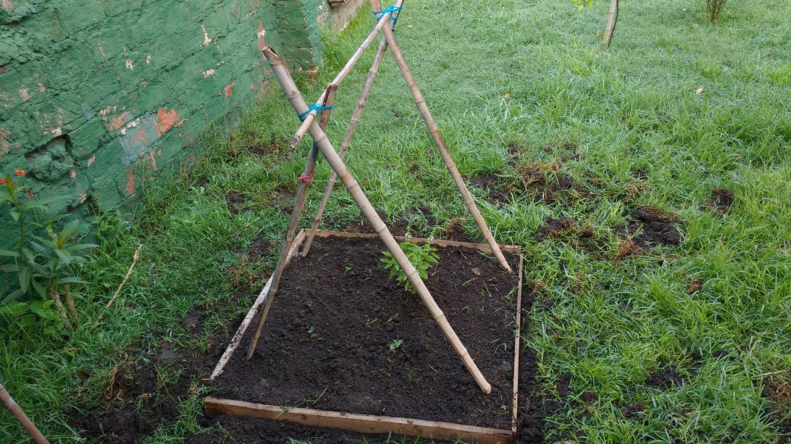

Huerta is back!
La huerta ha vuelto a sus andanzas y está libre en el patio:

- Tomate x 3
- Albahaca x 1
- Zapallo x 1.
La huerta ha vuelto a sus andanzas y está libre en el patio:
Ir a la oficina me lleva 1h 30min de bondi y tren en total; 2h en el peor de los casos (que es el 70% de los días). Lo mismo de vuelta. No es tan malo como parece: dejando de lado las incomodidades de viajar parado y apretado, las veces que puedo agarrarme un hueco tranquilo las uso para leer (costumbre relativamente nueva para mí), a veces escribir y siempre siempre, para pensar.
Luego de leer 7 hábitos de personas altamente efectiva, implementar una misión, hacer retrospectivas semanales y programar la semana en base a los proyectos, el fin de año y la crisis de los 30 (o la crisis de siempre)... la pregunta sigue vigente, o al menos, renovada: ¿estoy haciendo lo correcto?. El control del tiempo estricto me llevó a una zona gris donde no supe qué hacer con las estadísticas que sacaba de mí mismo; ¿qué significan? ¿me puedo optimizar más a mí mismo? Luego de eso, ¿qué?. Sostuve las incógnitas durante mucho tiempo el año pasado y no visualicé una forma de acción evidente.
Encontré gente pasando por lo mismo: Why time management is ruining our lives. Todos tratando de encontrar la definición propia de "cosa importante". Por mi parte, basta (o al menos, parar un poco) con la falsa sensación de control sobre las tareas diaras, menos paralelismo. No perder el foco en los objetivos a largo plazo, sin dejar de disfrutar el ahora.
Ariel.
Esta es una revisión rápida del 2016, aprovechando que aún estoy fresquito. :)
Este año empecé a practicar acercarme más a la gente que quiero, sin esperar a que suceda o dejarlo para cuando me acuerde. Quiero participar activamente y si bien no alcancé el ideal, sí me quedo con que entendí que ver a la familia y disfrutar de los amigos sólo depende de mí, todo está en mí para que sea mejor. Este año pude ver todas las puertas disponibles; el que viene quiero mejorar para abrir todas las que pueda.
Al fin me encontré con una forma de ejercitar que encaja con mis horarios y mis ganas de exigirme: en casa, por la mañana, antes de ir a la oficina, empezando con ejercicios que sí me gustan y extendiendo a otros que no tanto. Al menos por ahora es un desafío a superar.
Este año arrancaron con fuerza varios proyectos de negocio, varios de los cuales están en plena etapa de armado del prototipo, otros empezando a despegar. Fue clave definir objetivos claros y roles para los involucrados, así como tiempo a dedicarle a cada uno, para balancear el trabajo y la familia.
Hice 21 sesiones, teniendo el primer registro el 20/03 y el último el 05/12. No las llevo de forma estricta sino más bien como una forma de afianzar o revisar cómo estoy yendo cada cierto tiempo, similar a puntos de control. Me sirvió mucho para sincerarme conmigo mismo sobre actividades que no me aportaban nada y actitudes que necesitaba cambiar. Muchas veces apliqué Los 5 ¿por qué? para buscar la causa raíz de alguna situación problemática y plantear acciones acorde a cada respuesta; otras veces simplemente me plantié acciones a tomar para mejorar en aspectos más urgentes.
Este año me reencontré con alguno de mis hobbies y descubrí otros nuevos:
Mi amiga la escritura... la abandoné durante muchos años y ahora nos encontramos de nuevo, usualmente en el tren, de ida al trabajo o de vuelta a casa. Llevo siempre un cuaderno en la mochila y lo tengo lleno de borradores; algunos en la web y sólo una historia terminada... bueno, casi dos.
A pesar de la inconsistencia, algo concreto puede sacar: la conclusión de que sólo con mis ganas no voy a ir lejos en este tema y que necesito ayuda, un marco de trabajo para darle estructura lo que escribo. Ahora estoy haciendo un curso en Coursera sobre Escritura Creativa para encontrar justamente esas herramientas.
Este año me compré un Arduino Uno y algo dentro de mi cabeza se derramó: algo que siempre vi de lejos y quise aprender ahora lo tenía en las manos y con sólo mi motivación para aprender como obstáculo. Luego descubrí que el tiempo que uno le dedica es en realidad el obstáculo, como todo.
Estoy haciendo un pequeño proyecto de domótica (la forma más fácil y popular de encarar proyectos con esta tecnología, por lo que vi en Internet). Mi intención es colocar sensores de movimiento y llevar esa información por medio de WiFi a un dispositivo móvil o notificar el suceso mediante alguna plataforma. La parte del sensor PIR está resuelto; ahora voy por la plaquita WiFi, que no lo es tanto :S El proyecto se llama Domoco y está en GitHub.
Relativamente nuevo... cuando vivía con mis padres odiaba dedicarme a las plantas y cuando me fui a vivir solo mágicamente el suelo me llamaba. Sin embargo, hubo otros años en los que fui muuuucho más activo en sumatoria debo decir que el 2016 fue el año de la vagancia en este aspecto. Necesito arrancar cuanto antes, pero por favor, si puede ser un día con menos de 40° C de ST, mejor.
Estoy aprendiendo a tocar la guitarra, luego de pasarme la vida entera preguntándome qué se siente tocar una. Es fascinante. Todavía no saco un tema entero y ya cambié de profesor pero siento que es el camino por que debo ir. Mi intención es aprender hasta poder seguir un tema de Uncle Acid & the Deadbeats ¡y rockear en casa!.
8 de 19 libros propuestos. Tristísimo, si me apego sólamente a la lista; el problema reside en que estuve leyendo otros por necesidad y unos más se agregaron a la lista inicial. Sin contar tampoco otras fuentes, como el RSS. Como mejora debería plantear libros a leer no más lejos de 3 meses, cosa de adaptarme a los requerimientos del momento.
¡Listo para tomar la posta del año pasado! El próximo paso será hacer las listas con los objetivos a cumplir en cada aspecto.
¡Salud!
Estos son los libros que estoy leyendo durante el 2016; muchos son de repaso, para refrescar conceptos e ideas:
¡Salud!